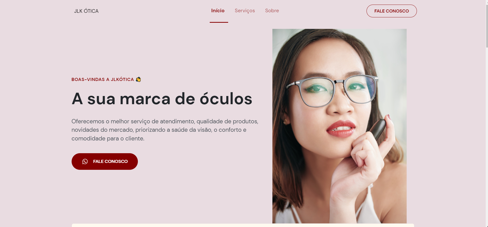

Projetos
Com a NWL RETURN - ORIGIN consegui criar meu primeiro projeto: um site reponsivo para a Ótica JLK, ultilizando HTML, CSS e JavaScript. Com o aprendizado fui capaz de criar a aplicação com meus próprios estilos, textos, imagens e logo.
